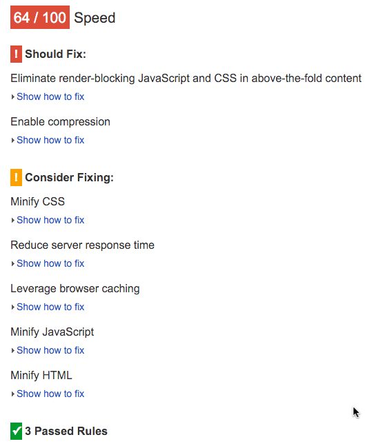

Associated lecture: Optimising page load.
This practical will guide you through some methodologies to help you speed up your WordPress website. This is a independent practical, you only need a working WordPress installation, not specifically one using the themes and plugins developed before.
Please use the university web server to have your project accessible from outside.
Practical plan:
First step for speeding up any website is to find out what is not working the way you want.
You can setup your WordPress installation using socweb8.napier.ac.uk (see documentation). Unfortunately, at the time I am writing these lines the server only provides PHP 5.3.3, which does not allow at least two syntaxes used in previous practicals. Therefore any <?= $var ?> has to be replaced with <?php echo $var ?> and the short array syntax should not be used ($var = ['item1', 'item2']; becomes $var = array('item1', 'item2');).
Setting up your website on a server accessible online will allow you to use third party SAAS products, such as Google Pagespeed Insight, GTmetrix or Yellowlab Tools.
Try to install WordPress on the server and then run these tools, starting with Google Pagespeed Insight:
As we can see, the css could be optimised, and GZip compression should be enabled.
Assuming you are using the School Of Computing server, your http server is Apache 2.2 when I write these lines, and AllowOverride All or similar is activated in your VirtualHost configuration.
We will assume your setup is similar to this one:
Edit your .htaccess file and add the following instruction:
SetOutputFilter DEFLATETry to run Google Pagespeed Insight again and the Should fix entry concerning GZip should have disappeared. Other configurations may be required depending on your server (name and version), please read the adequate documentation. HTML5 Boilerplate also has a good .htaccess file, which does not seem to work on the university outdated server but should work on modern, well configured, webservers.
Next major problem raised by Google is the number of blocking file loaded. This would actually require changes in your code, so you can try do these changes but it is not required here for now. You should just keep this in mind whenever you create either a theme or a plugin that includes javascript or css.
An easy solvable problem would be concatenating an minifying your css files to only have one as small as possible to load.
If you add some more pages (using wp example content for instance), and then try to configure WP Super Cache, you should see some cache file created for you. Please also try editing posts and see how to deal with the cached data when editing.
If you work on socweb8 and have your code versionned with git, you can use WP Super Cache as a submodule.
First, you have to generate a ssh key to enable your authentication on github. Login on the server with SSH (using putty if you are on the university machines) and execute the following:
ssh-keygen -t rsa -b 4096 -C "your_matriculation@live.napier.ac.uk"When asked Enter file in which to save the key (/home/staff/40007558/.ssh/id_rsa):, press enter (using the value surrounded with brackets).
Then, you can add a passphrase (a password for this key), or leave empty if you do not want an extra security.
Load the key in the ssh-agent:
eval "$(ssh-agent -s)"ssh-add ~/.ssh/id_rsaFinally, copy your public key and install it on your github account. When copying the key, make sure you are not adding whitespaces at the begining or the end of the string.
cat ~/.ssh/id_rsa.pubYou can now clone the plugin.
git submodule add git@github.com:Automattic/wp-super-cache.git wp-content/plugins/wp-super-cacheThen go to your WordPress administration, in plugins, and enable the plugin. The following lines must have been added to your wp-config.php.
define('WP_CACHE', true); //Added by WP-Cache Manager
define( 'WPCACHEHOME', '/home/staff/40007558/public_html/example/wp-content/plugins/wp-super-cache/' ); //Added by WP-Cache Manager
As you do not want to commit them (the absolute path is probably not the same of each setup you have), you may have some kind of local configuration file somewhere that is in you gitignore file.
When trying to setup WP Super Cache, you will need to choose a custom permalink type. Verify whether this broke your url rewriting in .htaccess. Your rewriting should look like this:
RewriteEngine On
RewriteBase /~40007558/example/
# BEGIN WordPress
RewriteRule ^$ wordpress/index.php [L]
# Skip real files and directories
RewriteCond %{REQUEST_FILENAME} !-f
RewriteCond %{REQUEST_FILENAME} !-d
# Otherwise send it to WordPress
RewriteRule .* wordpress/index.php [L]
# END WordPress
Using the tools discussed in the lecture, try to solve most problems raised. You may be able to use XDebug with Laragon just to see what kind of metrics you can have, but focussing on the frontend is enough for this module.